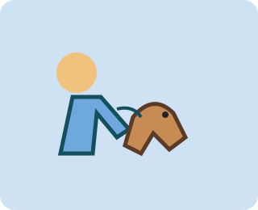
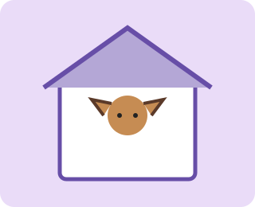

Serviços
Opções de acompanhamento
Os serviços seguintes são exemplos para o projeto académico e não representam uma empresa real.

- Visita ao domicílio para alimentação e companhia.
- Passeio acompanhado em zonas adequadas.
- Atualização ao tutor após a visita.
Resumo dos serviços
| Serviço | Objetivo | Duração ilustrativa |
|---|---|---|
| Visita ao domicílio | Alimentação e companhia | 30 minutos |
| Passeio | Atividade acompanhada | 30 minutos |
| Visita prolongada | Companhia e rotina | 60 minutos |
Próximo passo
Para colocar uma questão, consulte a página de contacto.
